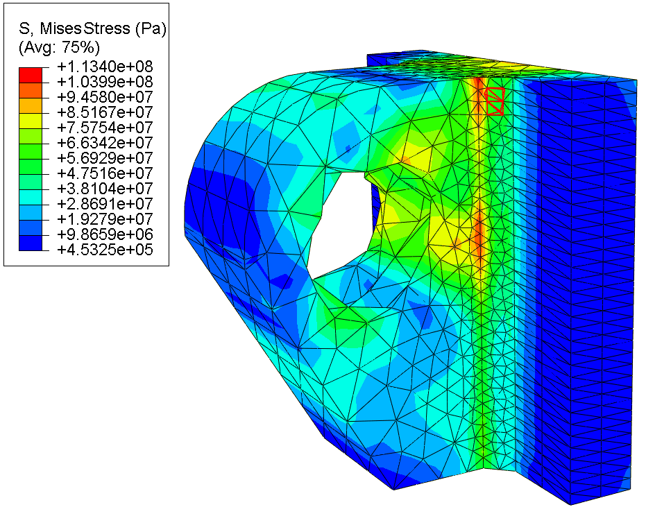
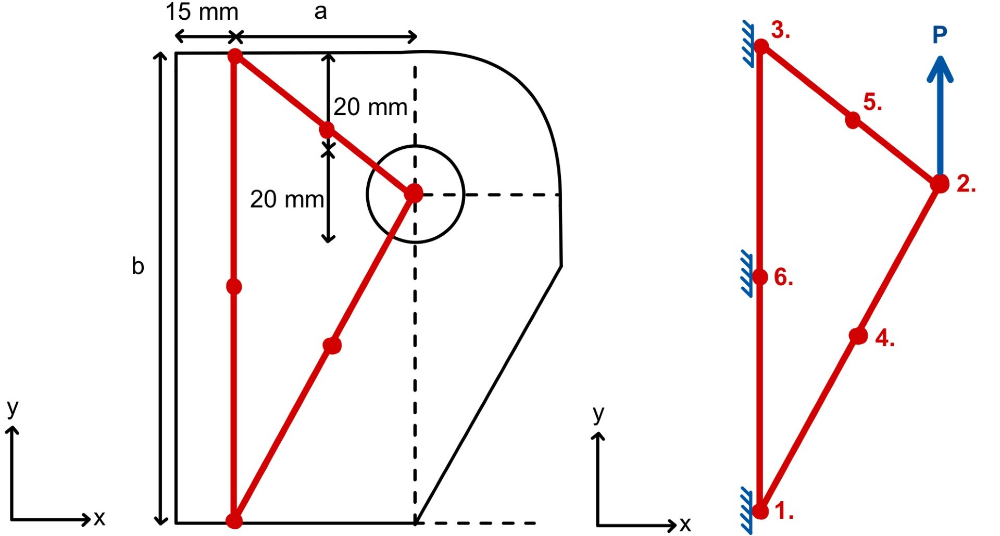
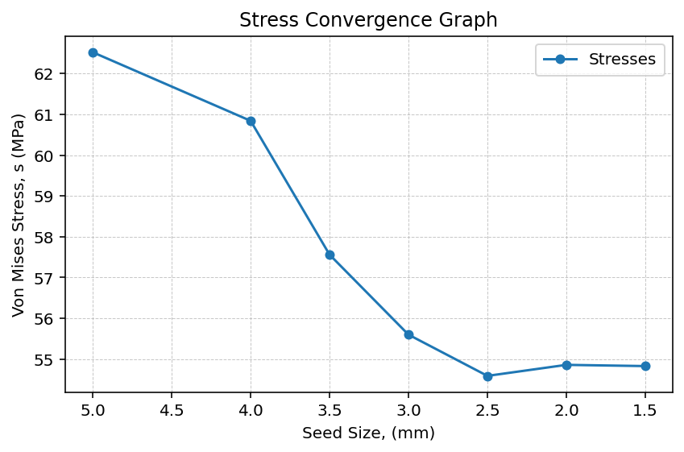
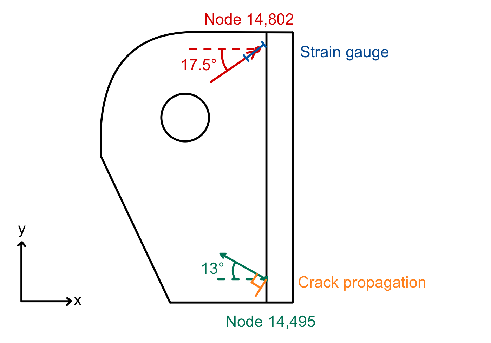

Structural analysis · Abaqus
Structural analysis of a lifting lug
Linking finite-element analysis, fracture mechanics and inspection planning for a pressure-vessel lifting attachment.
September – December 2025

Project overview
I analysed a welded lifting lug for a 12,000 kg pressure vessel. The work combined a hand-derived quadratic triangular element, an energy-consistency check and a three-dimensional Abaqus model using quadratic tetrahedral elements.
My contribution
I carried out the structural analysis, assessed mesh convergence and interpreted stresses near singularity-dominated regions. I then examined strain-gauge warning thresholds and used fracture mechanics and Paris’ law to estimate an inspection interval.
Engineering approach
- Check the analytical element’s energy consistency before interpreting its stress predictions.
- Use mesh refinement and stress averaging to assess numerical sensitivity.
- Distinguish local singularity effects from stress measures useful for engineering assessment.
- Relate crack growth and detection assumptions to an inspection interval.
Results and scope
The reported model gave a weld-line von Mises stress of 113.4 MPa and peak displacement of 24.42 µm. Fracture analysis gave a critical crack length of approximately 7.92 mm and an inspection interval of approximately 24,000 lifting cycles under the coursework assumptions.
Mesh convergence is numerical verification rather than experimental validation. The 99% probability-of-detection assumption applies to the specified detectable crack size, not a blanket confidence level for the entire inspection recommendation.
Project figures





